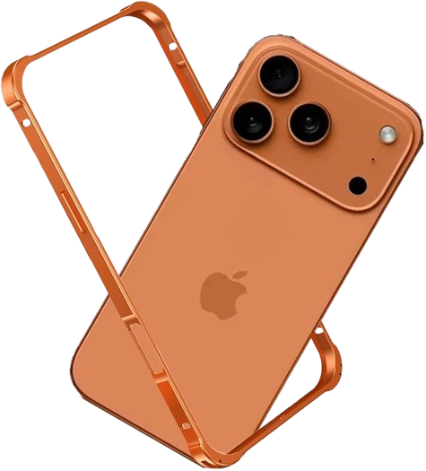

—— trabalho de hardware
iPhone 17
Pro Max
512 GB · TITANIUM · A19 PRO
Análise técnica do iPhone 17 Pro Max sob a perspectiva da Engenharia da Computação, abordando arquitetura de hardware, conectividade, ergonomia, manutenção e sustentabilidade.

—— visão geral do produto
O que é o
iPhone 17 Pro Max?
O iPhone 17 Pro Max é um smartphone de alto desempenho desenvolvido para integrar comunicação, processamento de dados, multimídia e acesso à internet em um único dispositivo portátil.
Ele visa resolver a frustração do consumidor com modelos de entrada anteriores, trazendo recursos avançados como: desempenho computacional, qualidade fotográfica avançada, conectividade constante e integração com serviços digitais.
Profissionais criativos, desenvolvedores e usuários que exigem máxima performance, privacidade e integração com o ecossistema Apple.
Pode ser utilizado em ambientes residenciais, corporativos, educacionais e de mobilidade, funcionando como ferramenta de comunicação, produtividade e entretenimento.
Especificações Técnicas

—— conectividade e telecomunicações
Sempre Conectado
Protocolos de Rede
O dispositivo utiliza protocolos modernos de comunicação, como IPv6 e HTTP/3, permitindo transferência eficiente de dados e compatibilidade com as redes atuais.
Wi-Fi 7
O padrão Wi-Fi 7 aumenta a largura de banda disponível e reduz a latência em aplicações que exigem grande volume de dados.
5G Sub-6 GHz + mmWave
O 5G Sub-6 GHz oferece maior cobertura, enquanto o mmWave proporciona velocidades mais elevadas. O dispositivo alterna entre as tecnologias conforme as condições da rede.
Rádio Frequência
O subsistema de rádio frequência gerencia a comunicação entre o modem e as antenas, selecionando automaticamente as bandas mais adequadas para cada cenário de uso.
Posicionamento das Antenas
As antenas são distribuídas ao longo da estrutura do aparelho para minimizar interferências eletromagnéticas e maximizar a qualidade do sinal recebido.
Papel na Rede
O iPhone 17 Pro Max atua principalmente como cliente de rede, acessando serviços online e servidores. Também pode funcionar como hotspot e integrar dispositivos inteligentes do ecossistema Apple, como: Apple Watch, AirTag e sistemas HomeKit
—— desenho universal e ergonomia
Projetado para Pessoas
Interface iOS
Interface intuitiva com gestos fluidos, widgets dinâmicos e organização adaptativa que aprende com o uso diário do usuário.
Tela Touch
Super Retina XDR de 6,9" com ProMotion 120Hz e resposta ao toque de 1ms. Reconhece até 5 toques simultâneos com precisão milimétrica.
Botões Físicos
Action Button totalmente personalizável, botão Camera Control com controle deslizante háptico e estrutura lateral em titânio grau 5.
Feedback Háptico
Taptic Engine de segunda geração com 3 intensidades de feedback. Simula texturas, cliques e notificações com precisão cirúrgica.
Acessibilidade
O iOS oferece recursos como VoiceOver, AssistiveTouch, legendas automáticas e reconhecimento de sons, permitindo que pessoas com limitações visuais, auditivas ou motoras utilizem o dispositivo de forma independente.
Ergonomia
A distribuição de Peso de 227g, Bordas arredondadas em titânio e vidro Ceramic Shield foram projetados para reduzir desconforto durante períodos prolongados de uso.
—— ecologia e manutenção
Engenharia Interna e Reparabilidade
Obsolescência Programada
A Apple garante suporte de software por até 7 anos, mas componentes soldados, baterias lacradas e a impossibilidade de expandir memória RAM ou armazenamento limita a longevidade funcional do equipamento.
Direito ao Reparo
O programa Self Service Repair da Apple permite a substituição de tela, bateria e câmera com peças originais, mas o bloqueio de pareamento limita reparos independentes.
Reparabilidade
O iFixit atribui nota 7/10 ao iPhone 17 Pro Max, pois o uso de cola e parafusos pentalobo, dificultam a desmontagem, exigindo ferramentas especializadas.
Componentes Soldados
RAM, armazenamento e modem são soldados diretamente na Logic Board, isso aumenta o custo de reparo em caso de falha. Essa integração permanente de componentes reduz espaço interno e melhora a eficiência do projeto, porém dificulta reparos e atualizações futuras.
Sustentabilidade
100% de alumínio reciclado no chip A19 Pro, cobalto e lítio recuperados na bateria. A Apple tem meta de carbono neutro em toda a cadeia até 2030.
—— conclusão
Síntese Final
Chip A19 Pro + Integração de Sistema
A decisão de integrar CPU, GPU, Neural Engine e modem 5G em um único SoC de 3nm é o maior feito de engenharia do iPhone 17 Pro Max. Essa arquitetura unificada elimina latência entre componentes, reduz consumo energético e entrega performance de desktop em um dispositivo de bolso — algo que nenhum concorrente conseguiu replicar na mesma escala.
Componentes Soldados e Reparo Bloqueado
A escolha de soldar RAM, armazenamento e modem diretamente na Logic Board, combinada ao sistema de pareamento de peças, representa um retrocesso em engenharia sustentável. Isso inviabiliza upgrades, eleva o custo de reparo e contribui para o descarte prematuro do dispositivo — contradizendo diretamente as metas de sustentabilidade declaradas pela própria Apple para 2030.
Excelência Técnica com Contradições Éticas
O iPhone 17 Pro Max representa o estado da arte em engenharia de hardware — cada componente foi projetado com precisão cirúrgica para maximizar desempenho, eficiência e integração. Contudo, o grupo conclui que a Apple ainda prioriza o ecossistema fechado em detrimento da sustentabilidade real. O produto é tecnicamente admirável, mas representa um compromisso entre desempenho, integração e reparabilidade. A verdadeira inovação do próximo ciclo deveria ser a abertura para reparo e longevidade — não apenas mais megapixels ou nanômetros.